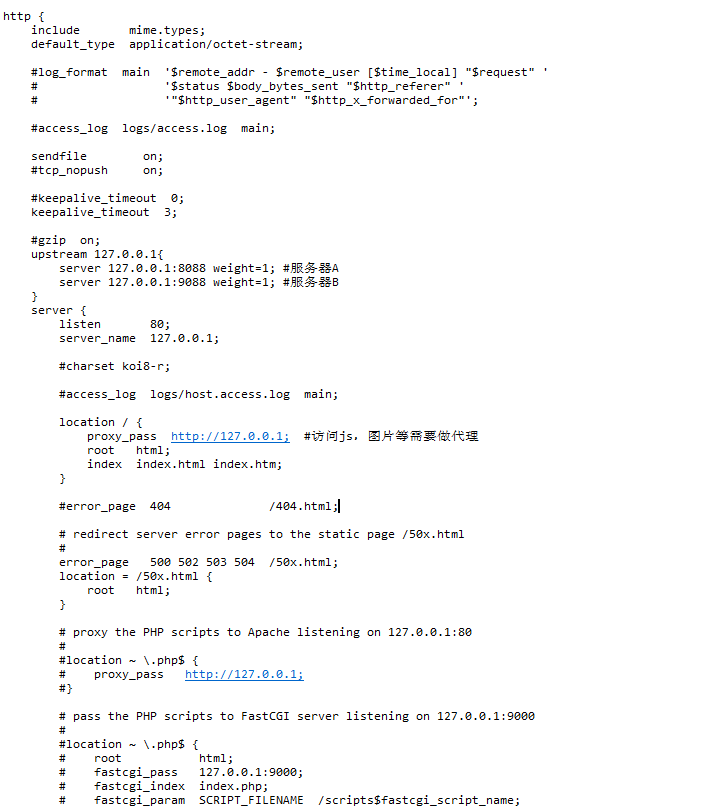

2：启动nginx后，我们在浏览器输入127.0.0.1,出现如下界面就代表nginx已近启动了：
3.接下来我们来配置nginx来做代理服务器和负载均衡：
打开nginx文件下的conf->nginx.conf文件，在hettp中添加
upstream 127.0.0.1{//这个127.0.0.1可以随便取个名字 server 127.0.0.1:8088 weight=1; #服务器A server 127.0.0.1:9088 weight=1; #服务器B}在server中的location添加：
proxy_pass http://127.0.0.1; #访问js，图片等需要做代理
其他的现在不用配置，配置完了如下：

说明：
1）server后的ip即使tomcat的ip,weight表示权重，weight越大，对应服务器被访问的概率越大，若是相等，几个服务器轮流被访问；
2）proxy_pass 后的http必须加上；
然后在tomcat的context.
<Manager className="de.javakaffee.web.msm.MemcachedBackupSessionManager" memcachedNodes="n1:127.0.0.1:11211" sticky="false" sessionBackupAsync="false" lockingMode="auto" requestUriIgnorePattern=".*\.(ico|png|gif|jpg|css|js)$" transcoderFactoryClass="de.javakaffee.web.msm.JavaSerializationTranscoderFactory" />
如下：